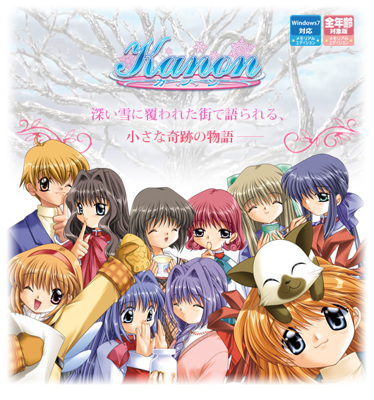
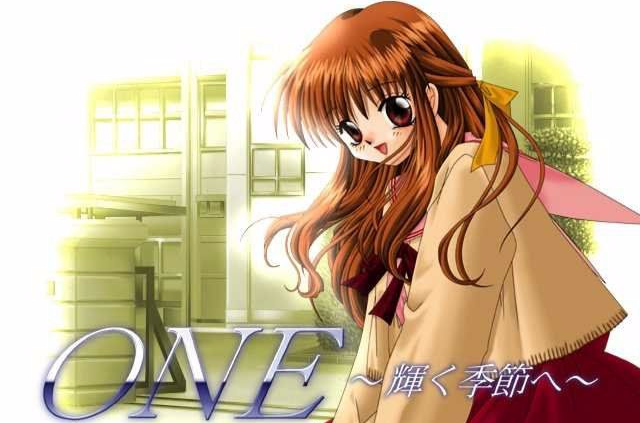
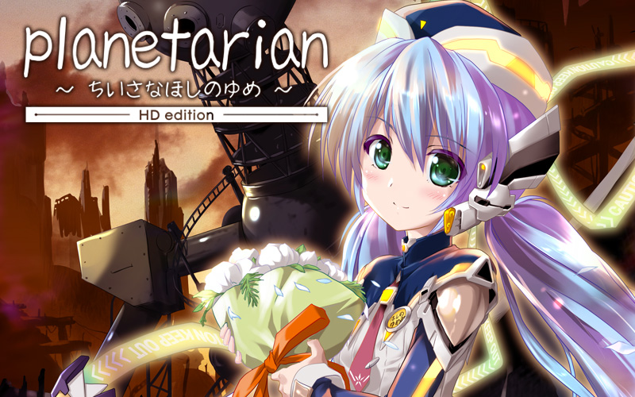
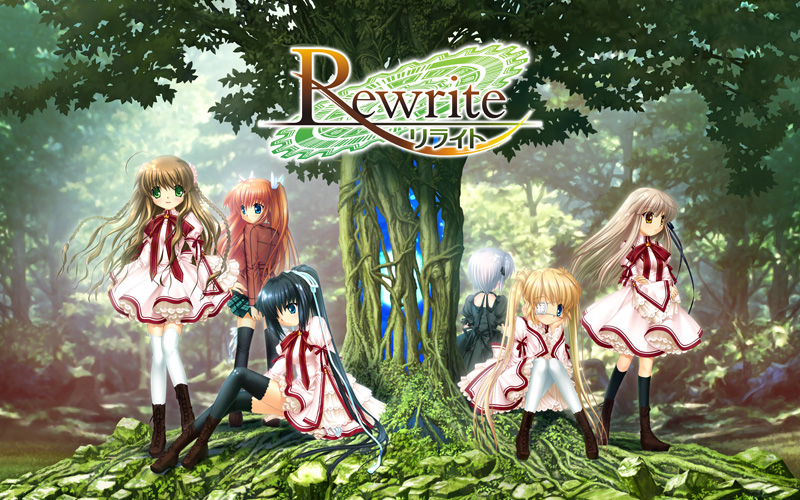
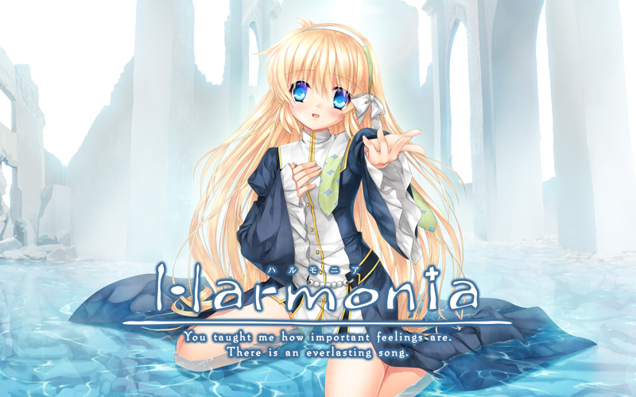

天上下着雪，纯白的雪花，从天空阴沉沉地飘落下来。北国的小镇，七年的离别，遗失的回忆，珍贵的事物，即将到来的春天，奇迹，即将上演。
祐一的双亲因为工作原因调去国外，不愿出国的他被迫借住在亲戚水濑家。时隔七年以后，祐一再度来到这北方的小镇。在这个七年前曾经住过，但失却了所有回忆的小镇上，和五个女孩相遇，相识。然后在春天到来时，一切都将结束，新的开始就会到来。

夏天，在靠近海边小小的街道上，一位青年从公共汽车站下车了，青年一直在旅行中，这样的小镇他无心久留，在赚足了路费后，他会去那些更繁华的地方，他的旅伴是母亲留给他的小小的人偶，他不用手接触，人偶就能动起来，从母亲那里继承了这种魔法。
靠着表演人偶维生，他的旅途才一直能继续着，青年给孩子们表演着人偶戏，然而，简陋的人偶无法吸引孩子们，没有得到报酬的他，无力地站在夏天的烈日下，迷迷糊糊地睡着了……
就在这条海边的街上，青年和命运中的少女相遇了……
那就像是天空的颜色。透明而执着地蔚蓝着。对爱来说，没有什么数不清的颜色。女孩子们喜欢这样幸福地微笑。她们用自己的方式信仰着天空。佳乃，观铃……
诅咒。命运。爱。旅人。交织在一起，于是变成一根寄托着希望的白色羽毛。于是就这样不由自主地留下了眼泪，为爱，为幸福，为她们和他们的一切努力。每个人都应该看一看。AIR，属于所有有梦想的人的，青空。

在某个小镇，主角冈崎朋也因为家庭的因素成为不良少年，一直与春原阳平为伍，在光坂高校过着潦倒的生活，但冀望终有一天能够离开所在的小镇。
某年4月14日，他在学校坡道前发现了一个止步不前的女孩，在朋也认识了这个名为“古河渚”的女孩后，他的生活开始有了重大的变化。
学园篇为主角和女主角们之间所发生的事件，After story为主角在学校毕业之后，以及家庭生活，其中还关联著“幻想世界”，CLANNAD就是由这三个要素所组成的故事。

在废品回收站工作的冈崎朋也，开始了与恋人坂上智代的甜蜜生活。智代的弟弟鹰文带来了父亲的私生女小智，小智被母亲所抛弃，不得已只能在朋也和智代的照料下生活。很快暑假来临了，鹰文过去的女友河南子离家出走也来到了这里。于是，朋也、智代、小智、鹰文、河南子，五人开始度过这最初又是最后的暑假。

雨不停地在下——
30年前，遭到细菌攻击而被遗弃的“封印都市”现如今已经变成了由自动战斗机械控制的无人的废墟。
他好不容易走到了那里，拖着疲惫不堪的身躯躲进了一座大厦里。
那儿有个天象仪。从前，人们通过眺望满天的星星来医治心灵的创伤。
他在那儿受到一个名叫“梦美”的女孩的接待。
30年来，这个女孩等待着来访的人，给他们充当天象仪的解说员。
其实，她是个坏了的机器人。
由于“梦美”的乞求，为了能够让毁坏的投影仪动起来，他夜以继日地修理着……
雨还是不停地下——
在这安静的星空里，“梦美”和淡淡的乡愁同时打动着他，他会想些什么呢？
“梦美”的命运又将如何呢？——

直枝理树与其青梅竹马的朋友们枣恭介、枣铃、井之原真人、宫泽谦吾一起过着全寄宿制的高中生活。他们曾于小时候结成一个所谓与恶势力作斗争并号称“正义的使者”的队伍，名叫“Little Busters”。这样的日子使理树渴望与伙伴们能够永远持续下去。
有一天，“Little Busters”首领三年级的恭介从就职活动中回来，并且说为了挥洒青春的光彩就提议要组成一个棒球队伍，队名沿用“Little Busters”，想和从前一样再热闹地玩一次。为了凑齐打棒球的人数，恭介让理树他们开始招募队员。
不久以后，理树和铃在一只被恭介取名为“列侬”的猫身上找到一张纸条，上面有这样的讯息：“请找出这个世界的秘密“


舞台是死后的世界，故事从男主角音无从“死后的世界”醒来开始，认识了一个叫由理的女孩。原来，由理在“死后的世界”率领着一个名为“死后(Shinda)世界(Sekai)战线(Sensen)”简称“SSS”的组织的少女相遇了。“SSS”成立的主要目的是反抗赐予他们生前悲哀命运的神以及神之使者——天使，在天使超乎常理的异能面前，“SSS”只能用枪来反抗。作为神之使者出现的天使一个孤独的少女——立华奏。

和库特在同一房间度过的夏天，能美·库特莉亚芙卡和直枝理树成为了恋人。故事发生在修学旅行平安结束后的另一个Little Busters！EX的世界。暑假开始了，Little Busters的其他成员都回家了，只有库特和理树留在了宿舍里。就在这时，男生宿舍的翻新工程中水管出了故障，房间没办法使用了。这时库特向着无家可归的理树，说出了“室友、现在也在、募集中、的说…”伸出了援手。理树点头答应了。就这样秘密的开始了同居生活。一边帮助库特完成暑假的自由研究，一边瞒着其他住宿生度着蜜月。这样的两人的目的地到底在哪。

绿化都市——风祭。居住在这个提倡以文明与绿色共存为理想的都市里的天王寺瑚太朗，和神户小鸟，吉野晴彦等朋友们一起过着平凡的日子。在这和平的风祭市，即将迎来一年一度的热闹时期——全城瞩目的收获季。
在这大型的文化祭般的活动中，瑚太朗开始打工了，内容是收集报刊文章材料。因为在风祭流传着未确认生物的情报，以及超自然的现象之类的似真非真的传闻。同时，在瑚太朗身上开始发生一些不可思议的事情。瑚太朗向超自然研究会的部长，千里朱音的求助，于是展开了涉及到瑚太朗认识的学生们的调查。对于瑚太朗来说，原本只是抱着一点冒险心态而已。只要能和热闹的伙伴们一起度过的话，这样就足够了。但瑚太朗还没有注意到，他将要探求那无人知晓的“真实”。

卷入了围绕着整个星球展开的命运之中的主人公，天王寺瑚太朗。但是，他所改写的命运并不是只有那些。作为一个人，他所选择的道路前方，存在着无数的可能性世界。在那其中，甚至也有像是节日一般热闹欢乐的未来。作品收录了多篇以绿化都市风祭为舞台，以各个女主人公为中心的剧本。通过女主线后的故事、完全不同的可能性世界的故事、甚至还有热闹非凡的恋爱喜剧，本作描绘出了小鸟、千早、朱音、静流、露西娅、还有篝的全新故事篇章。这是一部由Rewrite原班人马所打造，冠以“收获祭”之名，丰富多彩像是节日一般热闹的外传故事集。跟女主角所度过的甜蜜每一天，失去了的快乐日常，原作中没有解明的谜团，更进一步享受Rewrite世界的这些内容都会出现。
——收获的喜悦，与你共享。

「让想要传达的全部乘着歌声飞向明天……。」
这是，遥远时代的故事。在腐朽的设施当中，并未拥有感情机能而觉醒的机械少年。
他想要接近人类，在荒废的世界中不断行走着。
之后，他与独自一人歌唱的少女相遇了。
随着被少女捡到并一同生活，时钟的指针开始前进。重要的心情、想要留下的心、没能说出的思念、
想要传达的话语、延续至永远的约定……

为了整理祖母的遗物，男主角鹰原羽伊里利用暑假来到了鸟白岛。
在整理祖母遗物的过程中，渐渐的回忆起了儿时的记忆，并且在初次接触的海岛生活中，由一开始的困惑，慢慢变得适应了起来。
与眺望大海的少女相遇。
同寻找蝴蝶的少女相会。
跟探寻回忆和海盗船的少女相见。
和安静地生活在灯塔的少女相知。
在这座全新的小岛上，得到了新的同伴——
要是这个暑假，能永远这么下去就好了。
那时，少年不禁这样想到。